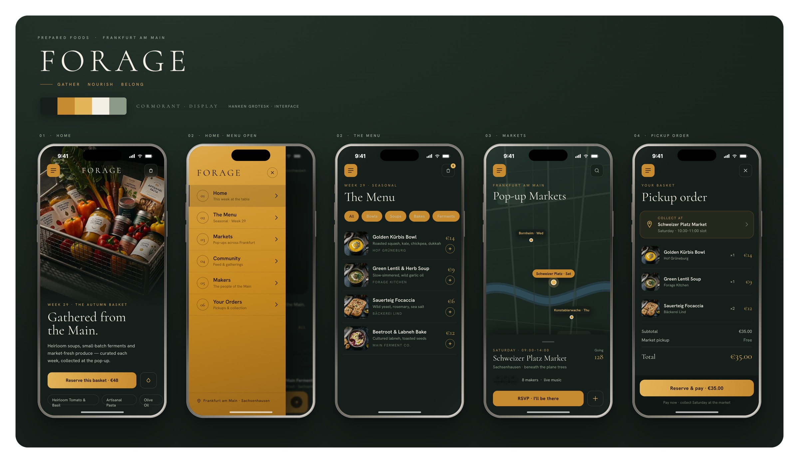

Vibe Coding
Forage is a self-initiated project in vibe coding — designing and building a complete brand and product concept end to end, with AI as a creative collaborator.
A friend is building a high-end prepared-foods brand for Frankfurt am Main: simple, seasonal meals ordered through an app and collected at weekend pop-up markets. From identity and typography to a full mobile interface, the goal was to move from a blank canvas to a polished, buildable concept as fast as possible — and to see how far an AI-assisted workflow can take a single designer.

Contact
I'm interested in an exciting new challenge. Let's do some amazing work together.